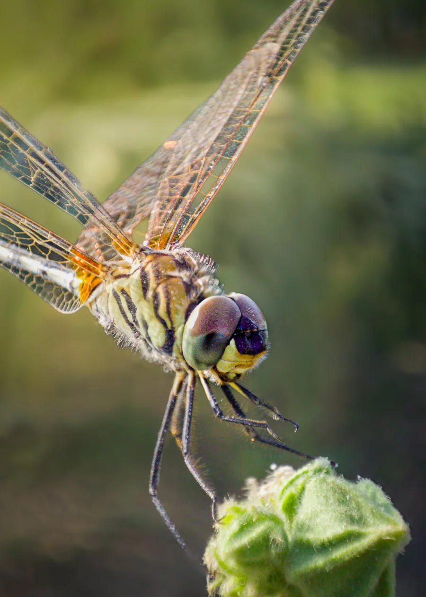
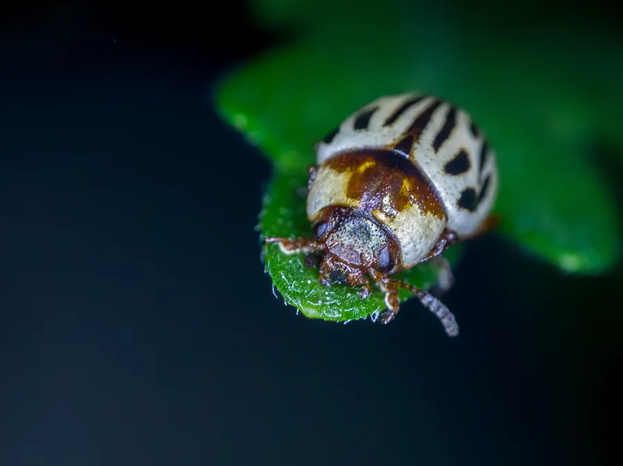

One of the best parts of macro photography as a self-taught enthusiast is simply getting outdoors early in the morning. When the air is cool and stillness settles over plants and grass, tiny insects sit motionless covered in dewdrops.
"Macro photography encourages you to pause and appreciate things you'd normally walk right past."
Observing Natural Morning Light
Early mornings provide soft, natural light that helps avoid harsh shadows on small insects and leaves. Taking time to adjust angle and positioning helps bring out fine textures without complex setups.


Continuous Practice in the Field
Every outing is a chance to practice camera handling, steady positioning, and composition. For me, photography is an enjoyable personal journey of exploring nature and improving step by step.
Topic
#MacroPhotography #NatureWalks #FieldNotes